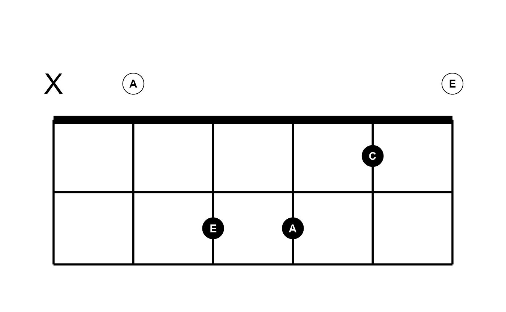
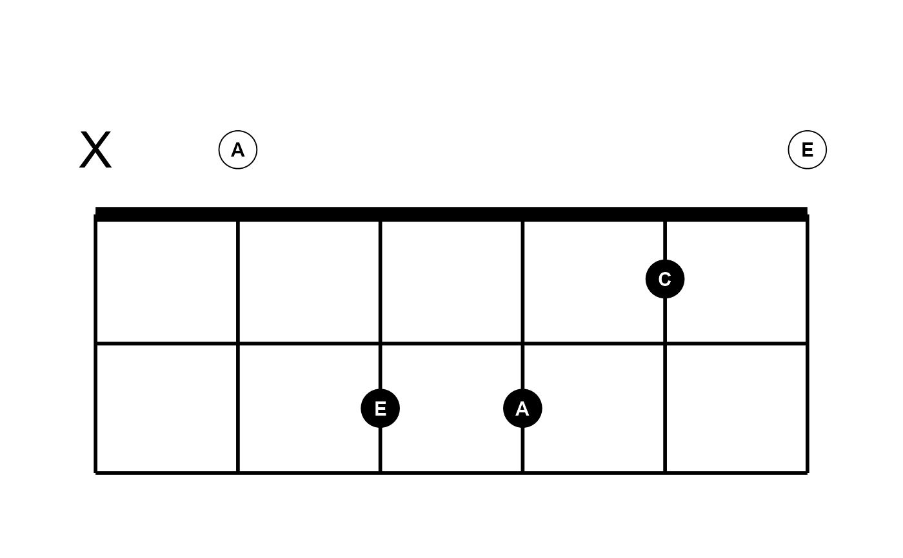

Create a fretboard diagram for a single chord or a general progression.
Usage
plot_fretboard(
string,
fret,
labels = NULL,
mute = FALSE,
label_size = 10,
label_color = "white",
point_size = 10,
point_color = "black",
point_fill = "black",
group = NULL,
horizontal = FALSE,
left_handed = FALSE,
fret_range = NULL,
fret_labels = NULL,
fret_offset = FALSE,
accidentals = c("flat", "sharp"),
tuning = "standard",
show_tuning = FALSE,
asp = NULL,
base_size = 20
)
plot_chord(
chord,
labels = NULL,
label_size = 10,
label_color = "white",
point_size = 10,
point_color = "black",
point_fill = "black",
group = NULL,
horizontal = FALSE,
left_handed = FALSE,
fret_range = NULL,
fret_labels = NULL,
fret_offset = FALSE,
accidentals = c("flat", "sharp"),
tuning = "standard",
show_tuning = FALSE,
asp = NULL,
base_size = 20
)Arguments
- string
integer or as a space-delimited character string; instrument string numbers.
- fret
integer or as a space-delimited character string; fret numbers.
- labels
NULLor character, optional vector of text labels, must be one for every point; or just the special value"notes".- mute
logical vector or specific integer indices, which notes to mute. See details.
- label_size
numeric, size of fretted note labels.
- label_color
character, label color.
- point_size
numeric, size of fretted note points.
- point_color
character, point color.
- point_fill
character, point fill color.
- group
optional vector to facet by.
- horizontal
logical, directional orientation.
- left_handed
logical, handedness orientation.
- fret_range
fret limits, if not
NULL, overrides limits derived fromfret.- fret_labels
integer, vector of fret number labels for fret axis. See details.
- fret_offset
logical set to
TRUEto shift the fret axis number labels (if present) from being directly next to the fret to being aligned with the circles behind the fret.- accidentals
character, when
labels = "notes"represent accidentals:"flat"or"sharp".- tuning
explicit tuning, e.g.,
"e, a, d g b e'", or a pre-defined tuning. See details.- show_tuning
logical, show tuning of each string on string axis.
- asp
numeric, aspect ratio, overrides default aspect ratio derived from number of strings and frets.
- base_size
base size for
ggplot2::theme_void().- chord
character, a single chord given in fret notation. See details.
Details
These functions are under development and subject to change. They each return a ggplot object.
Use plot_chord() to create a fretboard diagram of a specific chord.
plot_chord() accepts a character string in simple fretboard format, e.g.,
chord = "xo221o". Zero is allowed in place of "o". This only works when
no spaces or semicolons are detected. The function checks for spaces first,
then semicolons, to split fret numbers. Do not mix formats. For example, you
can use chord = "xo221o", chord = "x 8 10 10 9 8" or
chord = "x;8;10;10;9;8". Trailing delimiters are ignored (LilyPond format:
"x;8;10;10;9;8;"). If there are fewer fret values than there are strings on
the instrument, as inferred from tuning, then muted strings, x, are
inferred for the remaining lower-pitch strings.
plot_fretboard() produces a more general fretboard diagram plot. It is
intended for scales, arpeggios and other patterns along the fretboard. For
this function, provide vectors of string and fret numbers. mute is
available but not as applicable for this function; it is a pass-through from
plot_chord(). For single chord diagrams, use plot_chord(). The letter
"o" is also allowed in fret for open strings and will display below the
lowest fret plotted. The number 0 is treated with the intent of displaying
the corresponding position on the instrument neck.
Number of strings is derived from tuning. See tunings() for pre-defined
tunings and examples of explicit tunings. tuning affects point labels when
labels = "notes".
Providing fret_labels overrides the default (minimal) fret numbering
behavior for the fret axis. These are only intended to be integers. The
vector of integers given is sorted and subset if needed to the range of frets
that appear in the plot. See example.
Examples
# General patterns: scale shifting exercise
string <- c(6, 6, 6, 5, 5, 5, 4, 4, 4, 4, 4, 3, 3, 3, 2, 2, 2, 1, 1, 1)
fret <- "2 4 5 2 4 5 2 4 6 7 9 6 7 9 7 9 10 7 9 10" # string input accepted
plot_fretboard(string, fret, labels = "notes", fret_offset = TRUE)
 plot_fretboard(string, fret, fret_labels = c(3, 5, 7, 9, 12), show_tuning = TRUE)
# open and muted strings on shifted general fretboard layout
# try to use plot_chord() if more suitable
plot_fretboard("6 5 4 3", "o 9 10 12", mute = 2, show_tuning = TRUE)
plot_fretboard(string, fret, fret_labels = c(3, 5, 7, 9, 12), show_tuning = TRUE)
# open and muted strings on shifted general fretboard layout
# try to use plot_chord() if more suitable
plot_fretboard("6 5 4 3", "o 9 10 12", mute = 2, show_tuning = TRUE)
 # Single chord diagrams
# open chord
idx <- c(1, 1, 2, 2, 2, 1)
fill <- c("white", "black")[idx]
lab_col <- c("black", "white")[idx]
plot_chord("xo221o", "notes", label_color = lab_col, point_fill = fill)

# moveable chord
plot_chord("355433", horizontal = TRUE, show_tuning = TRUE)
# Single chord diagrams
# open chord
idx <- c(1, 1, 2, 2, 2, 1)
fill <- c("white", "black")[idx]
lab_col <- c("black", "white")[idx]
plot_chord("xo221o", "notes", label_color = lab_col, point_fill = fill)

# moveable chord
plot_chord("355433", horizontal = TRUE, show_tuning = TRUE)
 # leading x inferred; same as plot_chord("xxo321")
plot_chord("o231", fret_labels = 3)
# leading x inferred; same as plot_chord("xxo321")
plot_chord("o231", fret_labels = 3)
 plot_chord("10 12 13 11", show_tuning = TRUE)
plot_chord("10 12 13 11", show_tuning = TRUE)
 plot_chord("o x 10 12 13 11", fret_range = c(9, 14), fret_labels = c(9, 12))
plot_chord("o x 10 12 13 11", fret_range = c(9, 14), fret_labels = c(9, 12))